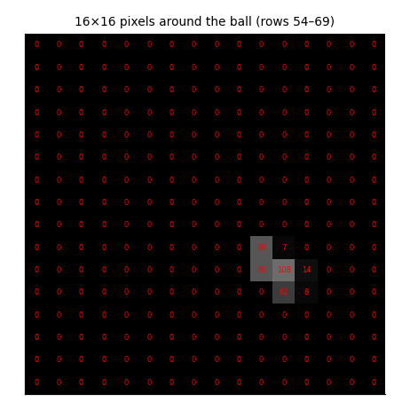
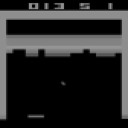
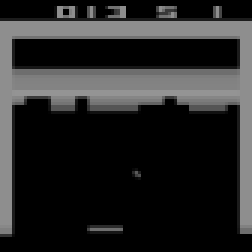
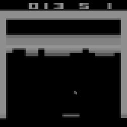
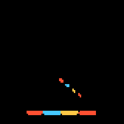
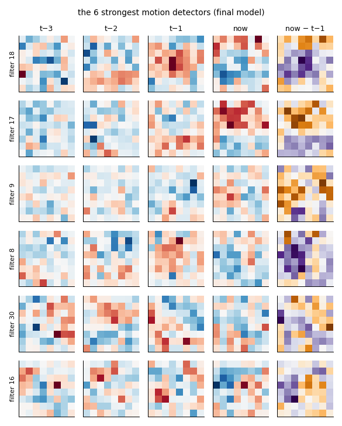
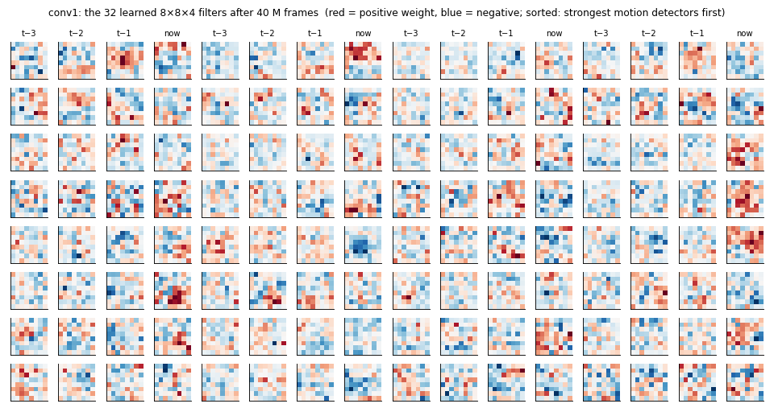
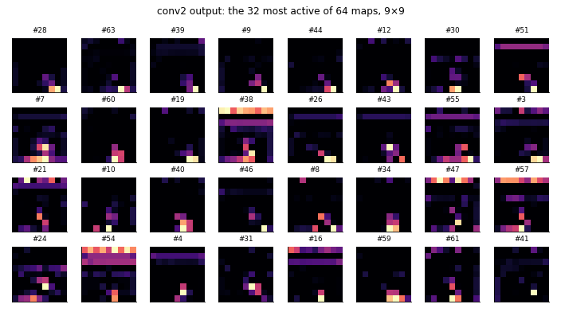
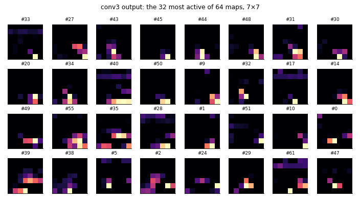

How it sees
The agent gets no game state at all: no ball position, no paddle position, no brick map. Its only input is the last four screens, shrunk to 84×84 pixels of gray. Everything it knows about where the ball is and where it is going, it has to work out from those pixels. This page follows a real input through the trained network, step by step. No machine learning background needed.
The short version
- Input: 4 gray pictures of 84×84 numbers (0–255): the last four moments of the game.
- Three convolution layers slide small learned patterns ("filters") over the pictures and output maps of where each pattern appears: first edges, the ball, the paddle; deeper, combinations of them.
- A dense layer squeezes all maps into 512 numbers: a summary of the moment.
- Two small heads read the summary: the actor (which button) and the critic (how well it's going). See The model.
- Nothing here was designed by hand. Every filter was learned from the game score alone.
1. What goes in: numbers
A computer image is a grid of numbers. The agent's grid is 84×84, each number a brightness from 0 (black) to 255 (white). Below, left, the real screen at one moment of a game played by the final model. Middle: what the agent actually receives (only the newest of its four pictures shown). Right: a 16×16 zoom around the ball. The ball is a handful of pixels with values near 100 in a field of zeros. That is all the network has to go on.
 the screen (210×160 colour)
the screen (210×160 colour) the input (84×84 gray)
the input (84×84 gray)
the numbers around the ballFrom the screen to the input, step by step
| Step | What happens | Why |
|---|---|---|
| Frame skip 4 | The agent picks an action every 4th frame; the action is repeated for the 4 frames and the rewards summed. | 60 decisions a second are not needed; 15 are enough, and training sees 4× more game per step. |
| Max-pool | Each pixel is the brighter of the last two raw frames. | The Atari draws some objects only every other frame (flicker); this makes the ball always visible. |
| Grayscale + resize | 210×160 colour → 84×84 gray (area averaging). | 7× fewer numbers. Colour carries little here (it marks the row's points, which the reward already tells). |
| Stack 4 | The input is the last 4 processed frames: a 4×84×84 array of bytes. | One frame shows where the ball is; several show which way and how fast it moves. |
| No-op start | Each game begins with 0–30 random "do nothing" steps. | So no two games are the same and the agent can't memorise one sequence of moves. |
Training and test use envpool's Breakout-v5, the same game with the same preprocessing as the classic BreakoutNoFrameskip-v4. The colour replays on this site are recorded through gymnasium's ALE with the same wrappers, because envpool doesn't return colour frames.
2. Why four pictures
A single picture says where the ball is, not where it is going. So the input is a stack of the last four pictures: an array of 4×84×84 numbers. The network gets all four at once, as if they were four colour channels of one image. On the right, the four positions of the ball, coloured from old to new: the trail gives direction and speed. (The paddle also moved.)

t−3
t−2
t−1now
what changed (old → new: blue, light blue, yellow, red)3. What the first layer learned
The first layer is a convolution. It has 32 filters; each is a small block of learned weights, 8×8 pixels × 4 pictures = 256 numbers. A filter is placed on an 8×8 patch of the input, each weight is multiplied with the pixel under it, and the products are added up: one number, large when the patch looks like the filter's pattern. Then the filter moves 4 pixels and does it again. 20 positions across × 20 down give a 20×20 map of where that pattern occurs. 32 filters → 32 maps. A ReLU then sets negative results to zero.
Below, the six filters that compare the pictures over time most strongly (weights in the newest picture differ from the one before, with opposite signs). Such a filter responds to something that moved: these are motion detectors. Red weights are positive, blue negative; the last column is the difference "now − t−1". Nobody designed these patterns. They started as random numbers and were shaped by the score.

All 32 filters, at three points in training. Pick one:

Honest note: unlike textbook pictures of image networks, these filters don't look like clean edges. Atari screens are simple, and the network only needs crude detectors. The weights after 0.5 M frames still correlate 0.78 with the final ones: the first layer changed least during training (see The model).
4. What each layer outputs
The same moment, layer by layer. Each small square is one map: bright = that filter fires strongly there. conv1 (32 maps, 20×20): some maps light up along walls and brick rows, others only at the ball and the paddle. conv2 (64 filters of 4×4 over all 32 maps, stride 2 → 9×9) and conv3 (64 filters of 3×3 → 7×7) combine those into fewer, coarser maps. Each layer keeps less about exactly where, and more about what is going on.



Finally, the 64 maps of 7×7 (3,136 numbers) are flattened and fed to a dense layer: 512 outputs, each a weighted sum of all 3,136 inputs. At this moment 89 of the 512 are active and the rest are exactly zero. These 512 numbers are the network's whole description of the moment; the actor and the critic see nothing else.

5. Where it looks
Saliency asks the trained network directly which pixels matter, without opening it up. The recipe is under the pictures.
How to read the saliency maps
Saliency asks "which pixels does the network actually use?" We take the real input, blur a small round patch (σ = 5 pixels) and run the network again: if the outputs change a lot, that patch mattered. Doing this for a grid of 21×21 patch positions gives a heat map (the method of Greydanus et al., 2017, "Visualizing and Understanding Atari Agents").
- Actor (orange): how much the action probabilities change. This is where it looks to decide where to move.
- Critic (blue): how much the value estimate changes. This is what it looks at to judge how well the game is going.
Maps are normalised per image: bright means "most important in this picture", not an absolute amount.
Glossary
- pixel
- one number in the image grid; here a brightness 0–255
- channel
- one 2-D grid in a stack: the input has 4 (the 4 pictures), conv1's output has 32
- filter (kernel)
- a small block of learned weights that is slid over the input; its output is high where the input matches its pattern
- stride
- how far the filter moves each step (4, 2 and 1 pixels in the three layers)
- feature map
- the grid of a filter's outputs over all positions: where its pattern appears
- ReLU
- max(0, x): keeps positive values, sets negatives to zero; it is what lets stacked layers represent more than a single weighted sum
- dense layer
- every output is a weighted sum of every input (here 3,136 in, 512 out)
- saliency
- how much the output changes when part of the input is blurred